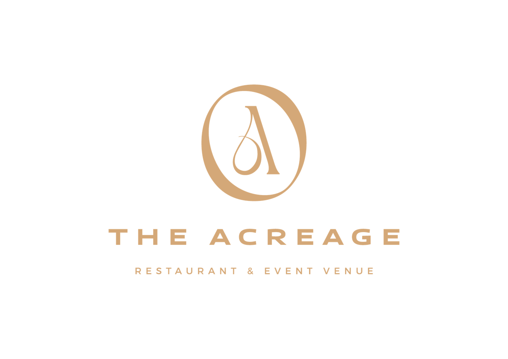
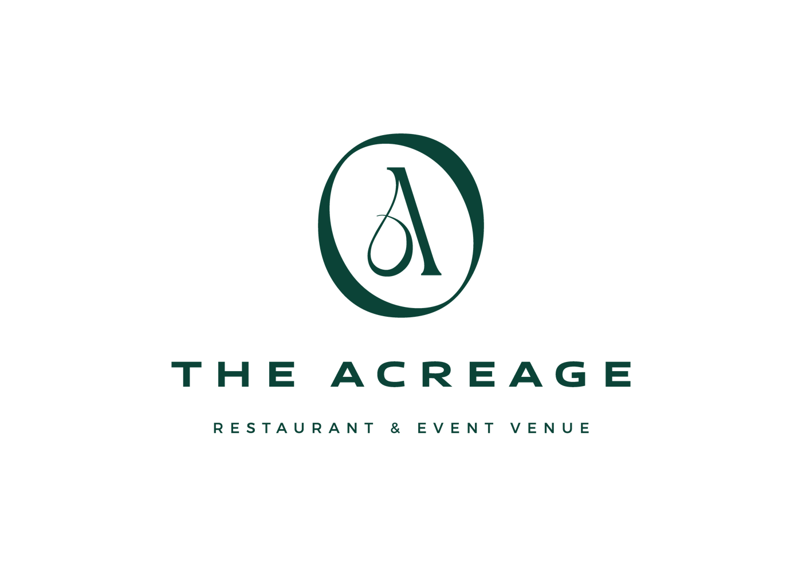
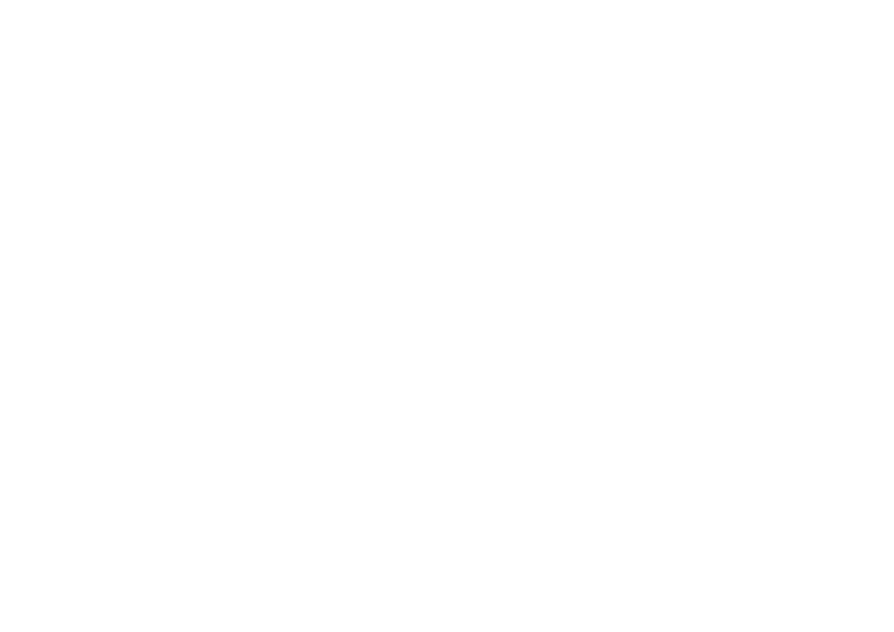
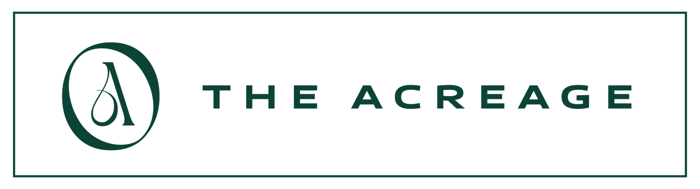
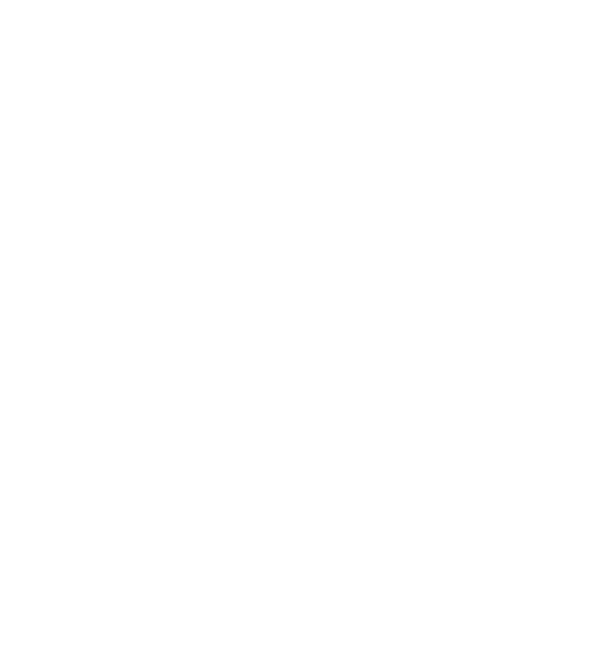
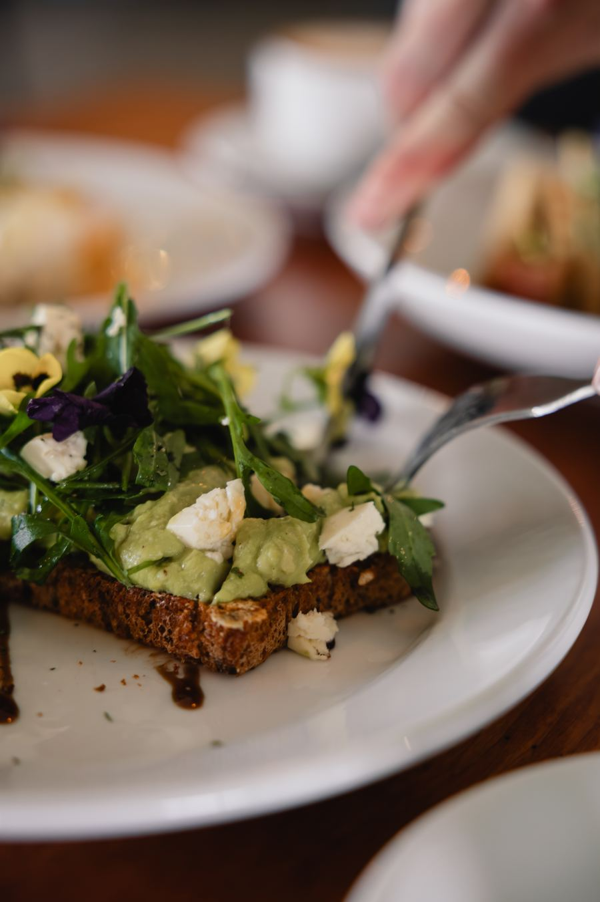
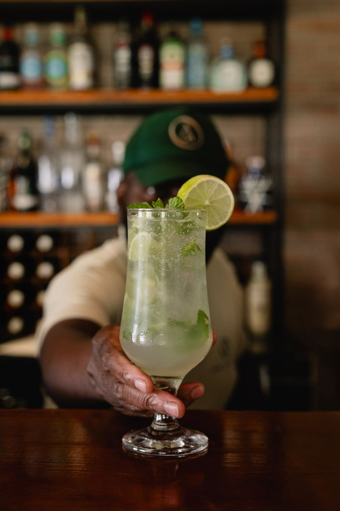

Brand Reference
One place to look up the logo, the colours, the type and the photography, so everything The Acreage puts out looks like the same business, from the website to a Story posted at seven in the morning.
Version 2 · 6 October 2026Updated to Match the New Website
Version 1 (17 September) left the type and the green open. Both are settled now, and this version follows the website you approved.
Six Marks, Each With a Place
The stacked logo is the main one. The A on its own does the small jobs: profile pictures, the top of a section, the corner of a post.






- Clear space. Keep a margin all round equal to the height of the capital A in THE ACREAGE.
- Smallest sizes. Stacked logo 150px wide on screen, horizontal 200px, the A 30px.
- One mark per layout. If the name is already in the headline, the A goes small in a corner rather than the full logo.
- Never stretch it, recolour it, add a shadow, or retype the name in another font.
Light First, Green for the Words
Your brand foundation asks for light, sun-drenched and understated, and warns against looking like a golf club. So warm white does most of the work, green carries the headings and the buttons, and gold is used sparingly.
Roughly how much of a page or a post each colour should cover.
#0B4337Headings, buttons and the logo. Settled: the templates' #014236 is retired.#FCFBF7The ground for almost everything.#F5F2EAA second ground, to separate one section from the next.#44443EBody text. Softer than black.#D4A878The gold in the logo files. Logo only.#B08A4FThe A, fine rules and large prices on posts.#7E5F22Small gold capitals on light grounds, where the paler golds can't be read.#C3AD84Lettering on green buttons, and gold on green generally.| Combination | Contrast | Use it for |
|---|---|---|
| Estate Green on Warm White | 10.8 : 1 | Every heading, on the site and on posts. |
| White on Estate Green | 11.2 : 1 | The footer and text on green. |
| Button Gold on Estate Green | 5.1 : 1 | Button lettering. The signature pairing, in small doses. |
| Label Gold on Warm White | 5.7 : 1 | Small capital labels above headings. |
| Deep Gold on Warm White | 3.1 : 1 | Large type only, such as a price on a post. Never small text. |
| Wheat Gold on Warm White | 2.1 : 1 | Decoration only. This is why the logo gold is never used for words. |
Ordinary text needs at least 4.5 to 1 to stay readable; large type needs 3 to 1.
Three Typefaces, Each With One Job
The same three faces as the website. All are Google Fonts under the Open Font License, so they're free for the website, social posts, menus and print.
The two script fonts in the brand folder are free demo versions marked "personal use only", and Pinklatte has been used on at least one social post. Please stop using both on anything public unless you buy the commercial licence. Libre Caslon italic now gives the same graceful feel without the risk.
The Details That Repeat
Buttons are Estate Green with Button Gold lettering, rounded ends, spaced capitals. One style everywhere.
A Day You'll Remember.
Every section opens the same way: the gold A, a gold label, then the green heading.
Hours
Tuesday to Sunday & public holidays
Breakfast from 7am
Kitchen until 5pm
Closed Mondays
Lists have a small green heading and one item per line, without bullets, dashes or boxes.
Four Post Designs
Drawn at Instagram's sizes: 1080 by 1350 for the feed and 1080 by 1920 for Stories and Reels. Every post in the social plan uses one of these.


- Restaurant150
- Stretch tent100 to 150
- The lapa30 to 90
- The estate5,000
- One idea per post. A dish and a price, or a space and a headcount.
- Photographs run to the edge or sit in a clean frame on warm white. No borders, stickers or filters.
- On Stories and Reels, keep words out of the top 250 and bottom 340 pixels, where Instagram puts its buttons.
- The A goes in a corner, gold on light posts and white on photographs. Never the full logo on a post.
See every post in place at the social posts page.
Natural Light, Real Moments
Yes
- Daylight and the last hour of it: the lawns, the water, the drive in.
- People mid-moment: eating, pouring, laughing, walking in.
- Food on the table with a hand in the frame.
- Space around the subject, so words have somewhere to sit.
- Upright framing, so it works as a post and as a Story.
No
- Stock photographs.
- Heavy filters, cold edits or flash.
- Bins, cables, stacked chairs, power lines.
- Anything saved from someone else's account.
- Horses or racing as the subject. The estate, not the track.



Three frames from your brand shoot that set the standard.
How The Acreage Sounds
- Warm, refined and understated. Short sentences.
- Say the thing plainly: the dish, the price, the day, the time.
- No exclamation marks, and go easy on emoji.
- Always a next step: a WhatsApp number or a link.
- Avoid stunning, nestled and hidden gem.
- The Acreage Event Venue & Restaurant, Midrand.
- Tuesday to Sunday & public holidays, breakfast from 7am, kitchen until 5pm, closed Mondays.
- Up to 150 in the restaurant, 5,000 across the estate.
- Twenty minutes from Sandton.
- Cashless. Dogs welcome.
Three Things to Finish
- Editable template files. Versions of the four post designs your team can edit themselves, once we know which tool they use.
- The Good & Proper logo as a vector (SVG, AI or PDF), so it stays sharp in print.
- The script fonts. A decision on Canyon and Pinklatte for posts already published.